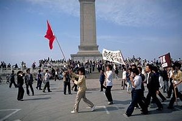

Student protest in Tiananmen Square
天安门广场上的学生抗议

Student protesters carry banners past the Monument to the People’s Heroes in Tiananmen Square.
参加抗议的学生举着横幅，从天安门广场上的人民英雄纪念碑旁走过。
Photo record
- Date
- June 2, 1989
- Location
- Tiananmen Square, Beijing
- Photographer
- Jiří Tondl
- Source
- Wikimedia Commons record Full-size source file
- Reuse
- CC BY-SA 4.0
Wikimedia records the photographer’s permission under this license. The available file is 299 × 199 pixels.